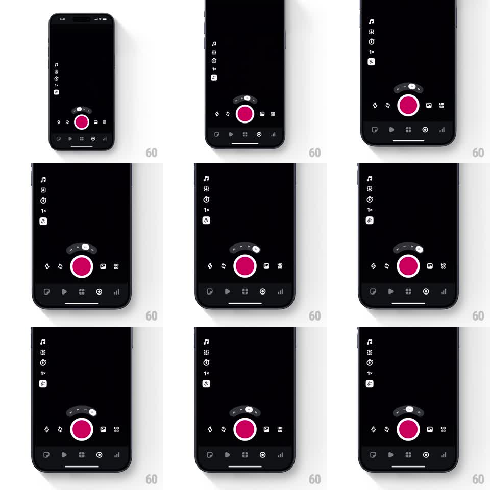

Media
Frame-by-frame

Rebuild this interaction 1:1: Edits zoom curve selector - above the pink record button sits a curved arc of zoom stops (0.5, 1x, 2x); tapping a stop slides a white highlight pill along the arc's curve, the pill tilting to match the arc's tangent at each position, while the camera's zoom value updates.

Rebuild this interaction 1:1: Edits zoom curve selector - above the pink record button sits a curved arc of zoom stops (0.5, 1x, 2x); tapping a stop slides a white highlight pill along the arc's curve, the pill tilting to match the arc's tangent at each position, while the camera's zoom value updates.
## Integration
Integration: stack-agnostic spec - springs given as stiffness/damping, timed motions as duration + curve; map every value to your framework and animation library of choice.
## Scene
Dark camera UI: left tool rail, pink record button at bottom center, and above it a small curved pill bar - a dark arc containing zoom stops (".5", "1", "2" style labels) with a white highlight capsule on the active stop. Bottom bar: mode icons (stickies, timer, grid, focus, levels).
## Motion spec
Pattern: highlight pill traveling a curved path.
- Tap a zoom stop: the white pill slides along the arc from the current stop to the tapped one (spring ~320/18), rotating to stay tangent to the curve throughout the travel.
- The active label inverts (black on white); the camera's zoom readout (left rail "1x") updates with a small pop (scale 1 -> 1.15 -> 1, spring ~340/16).
- Drag across the arc: the pill follows the finger along the curve, haptic-style tick at each stop, release snapping to the nearest stop.
- The record button breathes subtly (scale 1 -> 1.02, 2s) and does not move when the pill travels.
## Calibration
- The pill's rotation matters: at the arc's edges it sits tilted, at center it is level.
- Travel along the curve is smooth - the pill never cuts a chord across the arc.
## Reduced motion
The pill crossfades between stops (180ms) without path travel.
## Don't miss
- The arc is shallow - a gentle smile curve above the record button, not a semicircle.
- Zoom labels are small and gray until highlighted.